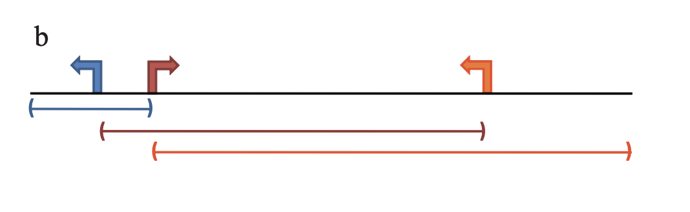
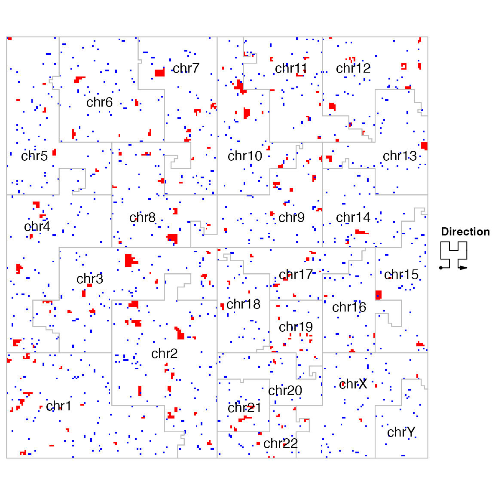

Topic 3-01: Implement the GREAT method
Zuguang Gu z.gu@dkfz.de
2025-05-31
Source:vignettes/topic3_01_implement_GREAT.Rmd
topic3_01_implement_GREAT.RmdWe need the following input data
- a set of input regions,
- gene models which provides coordinates of TSSs or genes,
- a collection of gene sets.
For demonstration, we randomly generate 1000 regions from hg19 human genome.
library(rGREAT)
regions = randomRegions(1000, genome = "hg19")
regions## GRanges object with 1000 ranges and 0 metadata columns:
## seqnames ranges strand
## <Rle> <IRanges> <Rle>
## [1] chr1 8490839-8491879 *
## [2] chr1 11688622-11698114 *
## [3] chr1 12905271-12910214 *
## [4] chr1 25116817-25124572 *
## [5] chr1 31749990-31757000 *
## ... ... ... ...
## [996] chrY 37562890-37566408 *
## [997] chrY 41188526-41194093 *
## [998] chrY 47443527-47451780 *
## [999] chrY 52855523-52862183 *
## [1000] chrY 54148839-54151161 *
## -------
## seqinfo: 26 sequences from an unspecified genome; no seqlengthsOn Bioconductor, “gene models” for standard genome are provided via TxDb* packages. For human genome hg19, there is a TxDb.Hsapiens.UCSC.hg19.knownGene package.
We use genes() to get gene coordinates, next use
promoters() to get TSSs of genes.
library(TxDb.Hsapiens.UCSC.hg19.knownGene)
g = genes(TxDb.Hsapiens.UCSC.hg19.knownGene)
tss = promoters(g, upstream = 0, downstream = 1)
tss## GRanges object with 23056 ranges and 1 metadata column:
## seqnames ranges strand | gene_id
## <Rle> <IRanges> <Rle> | <character>
## 1 chr19 58874214 - | 1
## 10 chr8 18248755 + | 10
## 100 chr20 43280376 - | 100
## 1000 chr18 25757445 - | 1000
## 10000 chr1 244006886 - | 10000
## ... ... ... ... . ...
## 9991 chr9 115095944 - | 9991
## 9992 chr21 35736323 + | 9992
## 9993 chr22 19109967 - | 9993
## 9994 chr6 90539619 + | 9994
## 9997 chr22 50964905 - | 9997
## -------
## seqinfo: 93 sequences (1 circular) from hg19 genomeQuestion: Now there are two sources which provide genes, one from org.Hs.eg.db and the other from TxDb.Hsapiens.UCSC.hg19.knownGene or TxDb.Hsapiens.UCSC.hg38.knownGene. Are the genes identical in the three sources or there are still differences? For the two verions of TxDb objects, what are the difference?
In the GREAT method, TSSs are extended to construct geneset associated regions. We demonstrate the simplest extension rule:

In this model, each TSS is extended to its upstream and downstream until it reaches the maximal extension (1MB) or its neighbouring TSS.
TSSs can be thought of as regions with zero-width (or width = 1bp), then after sorting TSSs by their coordinates, its neighbouring TSSs are basically the previous and the next TSSs. Also in this case, the strand information is not needed.
The processing should be applied per-chromosome. We first split the
whole tss by chromosomes:
As TSSs are sorted, we simply add two columns
left_tss_pos and right_tss_pos which
correspond to the coordinates of each TSS’s left and righ neighbours.
The left_tss_pos of the first TSS in a chromsome is set to 1 and the
right_tss_pos of the last TSS is set to the total length of that
chromosome.
If the tss object is extracted from TxDb object, the
chromosome length information is already stored in the object, which can
be retrieved by seqlengths() function.
tl = lapply(tl, function(gr) {
n = length(gr)
left = integer(n)
right = integer(n)
left[1] = 1
if(n > 1) {
left[2:n] = start(gr)[1:(n-1)]
}
right[n] = seqlengths(gr)[as.character(seqnames(gr))[1]]
if(n > 1) {
right[1:(n-1)] = start(gr)[2:n]
}
gr$left_tss_pos = left
gr$right_tss_pos = right
gr
})We convert tl back to a single GRanges
object. Here the conversion is a little bit tricky. You cannot use
unlist(tl) or do.call("c", tl), while you
should first convert tl (which is a list) to a
GRangesList object, then with unlist():
## GRanges object with 23056 ranges and 3 metadata columns:
## seqnames ranges strand | gene_id
## <Rle> <IRanges> <Rle> | <character>
## chr1.100287102 chr1 11874 * | 100287102
## chr1.653635 chr1 29961 * | 653635
## chr1.79501 chr1 69091 * | 79501
## chr1.729737 chr1 140566 * | 729737
## chr1.100288069 chr1 714068 * | 100288069
## ... ... ... ... . ...
## chrUn_gl000219.283788 chrUn_gl000219 99642 * | 283788
## chrUn_gl000220.100507412 chrUn_gl000220 97129 * | 100507412
## chrUn_gl000228.728410 chrUn_gl000228 79448 * | 728410
## chrUn_gl000228.100653046 chrUn_gl000228 86060 * | 100653046
## chrUn_gl000228.100288687 chrUn_gl000228 112605 * | 100288687
## left_tss_pos right_tss_pos
## <numeric> <integer>
## chr1.100287102 1 29961
## chr1.653635 11874 69091
## chr1.79501 29961 140566
## chr1.729737 69091 714068
## chr1.100288069 140566 762902
## ... ... ...
## chrUn_gl000219.283788 1 179198
## chrUn_gl000220.100507412 1 161802
## chrUn_gl000228.728410 1 86060
## chrUn_gl000228.100653046 79448 112605
## chrUn_gl000228.100288687 86060 129120
## -------
## seqinfo: 93 sequences (1 circular) from hg19 genomeNow in tss2, there are coordinates of the left and right
TSSs. The extension of TSS denoted as
is calculated as
Translating into R code is:
s = pmax(start(tss2) - 1000000, tss2$left_tss_pos)
e = pmin(start(tss2) + 1000000, tss2$right_tss_pos)We construct a new GRanges object
extended_tss. This object has the same rows as
tss. We also copy the seqlengths information
to it since we need the chromosome lengths in the later anlaysis.
extended_tss = GRanges(seqnames = seqnames(tss), ranges = IRanges(s, e))
extended_tss$gene_id = tss$gene_id
seqlengths(extended_tss) = seqlengths(tss)
extended_tss## GRanges object with 23056 ranges and 1 metadata column:
## seqnames ranges strand | gene_id
## <Rle> <IRanges> <Rle> | <character>
## [1] chr1 1-29961 * | 100287102
## [2] chr1 11874-69091 * | 653635
## [3] chr1 29961-140566 * | 79501
## [4] chr1 69091-714068 * | 729737
## [5] chr1 140566-762902 * | 100288069
## ... ... ... ... . ...
## [23052] chrUn_gl000219 1-179198 * | 283788
## [23053] chrUn_gl000220 1-161802 * | 100507412
## [23054] chrUn_gl000228 1-86060 * | 728410
## [23055] chrUn_gl000228 79448-112605 * | 100653046
## [23056] chrUn_gl000228 86060-129120 * | 100288687
## -------
## seqinfo: 93 sequences from an unspecified genomeIt is important to note, extended regions in
extended_tss may overlap.
Next we use an example gene set from the hallmark gene sets:
library(GSEAtopics)
gs = get_msigdb(version = "2024.1.Hs", collection = "h.all")
geneset = gs[[1]]We can extract the extended TSSs that are associated with this gene set:
gs_region = extended_tss[extended_tss$gene_id %in% geneset]As regions in gs_region may overlap, we need to remove
the overlapped regions:
gs_region = reduce(gs_region)We calculate the total length of regions in the genome that are associated to this gene set:
In this example, the total length of the genome is the sumation of
all chromosome lengths which are provided by
seqlengths().
l2 = sum(seqlengths(tss))The proportion:
p = l1/l2Next we count the total number of input regions:
n = length(regions)And the number of input regions that overlap with the geneset-associated regions.
ov = findOverlaps(regions, gs_region)
k = length(unique(queryHits(ov)))In this step, instead of overlapping the complete intervals in
regions, we can also just overlap the middle points:
We have everything and we can calculate the p-value from the Binomial distribution:
pbinom(k - 1, n, p, lower.tail = FALSE)## [1] 0.8044597The mean of Bionomial distribution is np, then the log2
fold enrichment is
log2(k/(n*p))## [1] -0.3282989If you want to visualize the distribution of input regions as well as the extended regions associated with this gene set, the Hilbert curve is a nice way to do it:
library(HilbertCurve)
hc = GenomicHilbertCurve(species = "hg19", level = 8, mode = "pixel")
hc_layer(hc, gs_region, col = "red", mean_mode = "absolute")
hc_layer(hc, regions, col = "blue", mean_mode = "absolute")
hc_map(hc, fill = NA, border = "grey", add = TRUE)
Set background
In the previous example, we use the whole genome as the background. We can self-define a smaller background. In the next example, we will restrict the analysis in chromosome 1-22 and XY, and we remove the gap regions from the genome.
In this case, we need to construct a GRanges object that
contains background regions. Let’s first construct a global
GRanges object where each row corresponds to the whole
chromosome:
chromosomes = paste0("chr", c(1:22, "X", "Y"))
chr_len = seqlengths(tss)
chr_len = chr_len[chromosomes]
background = GRanges(seqnames = names(chr_len), ranges = IRanges(1, chr_len))
background## GRanges object with 24 ranges and 0 metadata columns:
## seqnames ranges strand
## <Rle> <IRanges> <Rle>
## [1] chr1 1-249250621 *
## [2] chr2 1-243199373 *
## [3] chr3 1-198022430 *
## [4] chr4 1-191154276 *
## [5] chr5 1-180915260 *
## ... ... ... ...
## [20] chr20 1-63025520 *
## [21] chr21 1-48129895 *
## [22] chr22 1-51304566 *
## [23] chrX 1-155270560 *
## [24] chrY 1-59373566 *
## -------
## seqinfo: 24 sequences from an unspecified genome; no seqlengthsThere is also a helper function
seqlengths_as_GRanges():
seqlengths_as_GRanges(tss, chromosomes)Next we extract the gap regions from UCSC table browser, or use the
helper function getGapFromUCSC(). Be careful that you
choose the correct genome version.
gap = getGapFromUCSC("hg19")Then also remove gap regions. This can be easily done by
setdiff().
background = setdiff(background, gap)Now we have the self-defined background. Next we need to restrict
everthing to background.
First, the input regions. For simplicity, we use the mid points of the original regions.
ov = findOverlaps(regions_mid, background)
regions_mid2 = regions_mid[unique(queryHits(ov))]Overlappping the extended TSSs to background is a little
bit tricky because intervals in extended_tss have overlaps.
If you directly use intersect() function, overlapping
regions will be merged.
We need to do it in a pairwise mode in two steps. First, linking
regions in extended_tss and background,
i.e. for region
,
which regions in background overlap to it.
ov = findOverlaps(extended_tss, background)
ov## Hits object with 23423 hits and 0 metadata columns:
## queryHits subjectHits
## <integer> <integer>
## [1] 1 1
## [2] 2 1
## [3] 3 1
## [4] 4 1
## [5] 4 2
## ... ... ...
## [23419] 23029 272
## [23420] 23030 272
## [23421] 23031 272
## [23422] 23032 272
## [23423] 23033 272
## -------
## queryLength: 23056 / subjectLength: 274Then for a region
and a backgrond
that are in one row of ov, we can do intersection only for
this pair of regions. This is done by pintersect():
extended_tss2 = pintersect(extended_tss[queryHits(ov)], background[subjectHits(ov)])extended_tss2 contains extended regions restricted in
background. Note multiple rows in
extended_tss2 can be linked to a single gene since the
original extended TSSs can be segmented by background.
For the remaining parts of the GREAT anlaysis, it is basically the same;
gs_region2 = extended_tss2[extended_tss2$gene_id %in% geneset]
gs_region2 = reduce(gs_region2)
l1 = sum(width(gs_region2))
l2 = sum(width(background))
p = l1/l2
n = length(regions_mid2)
ov = findOverlaps(regions_mid2, gs_region2)
k = length(unique(queryHits(ov)))
pbinom(k - 1, n, p, lower.tail = FALSE)## [1] 0.8845886